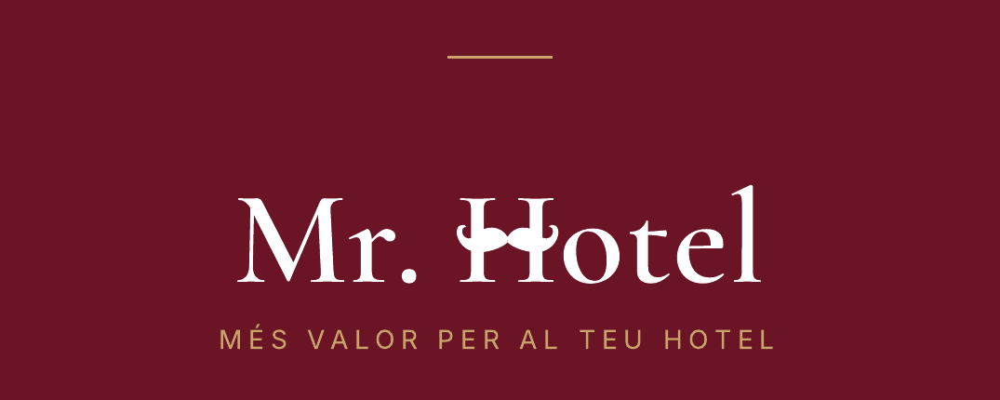
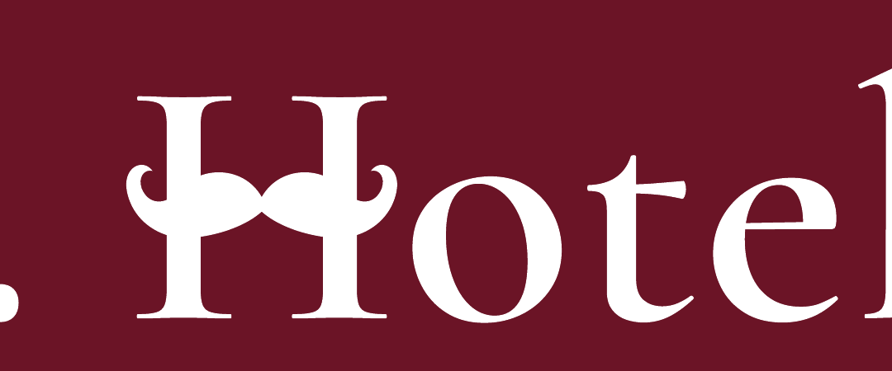
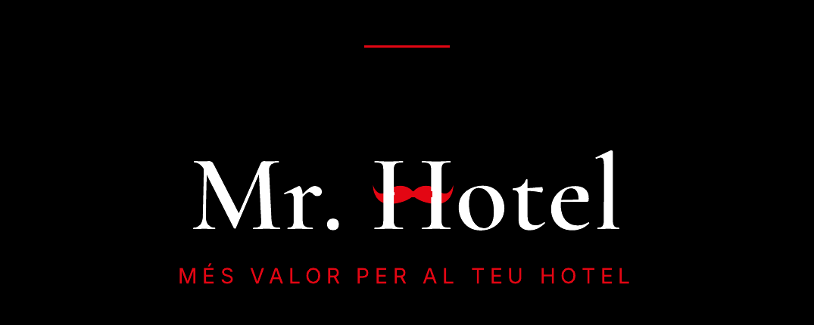
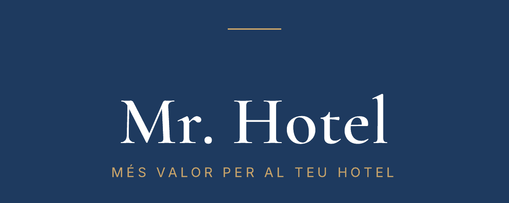

Mr. Hotel: la H con bigote
La barra de la H de Hotel pasa a ser un bigote, y el azul de la tarjeta de visita pasa a burdeos.

La idea
El nombre ya dice «señor». En vez de añadir un dibujo al lado, el bigote va dentro de la letra: sustituye a la barra horizontal de la H de Hotel.
- Un bigote divertido, de puntas rizadas, no uno serio.
- Del mismo color que el nombre: blanco sobre el fondo, oscuro donde el nombre va en oscuro.
- Del diseño solo cambia el azul, que pasa a burdeos. El dorado, el blanco y el dorso crema se quedan como estaban.

La primera prueba: negro, rojo y blanco
Antes se probó con otra paleta: fondo negro, texto blanco y el bigote en rojo. Después se volvió al diseño original, cambiando solo el azul y poniendo el bigote del color del nombre.

De dónde se parte
La tarjeta original, en azul marino y con la H normal.

Lo que falta
- Decidir el tono exacto de burdeos y la forma final del bigote.
- Llevar el cambio al resto de piezas: la tarjeta en castellano, las tarjetas del quiz y los códigos QR.
- En el pie del dorso el nombre va muy pequeño y el bigote casi no se distingue. Hay que decidir si ahí se queda, se agranda o se quita.